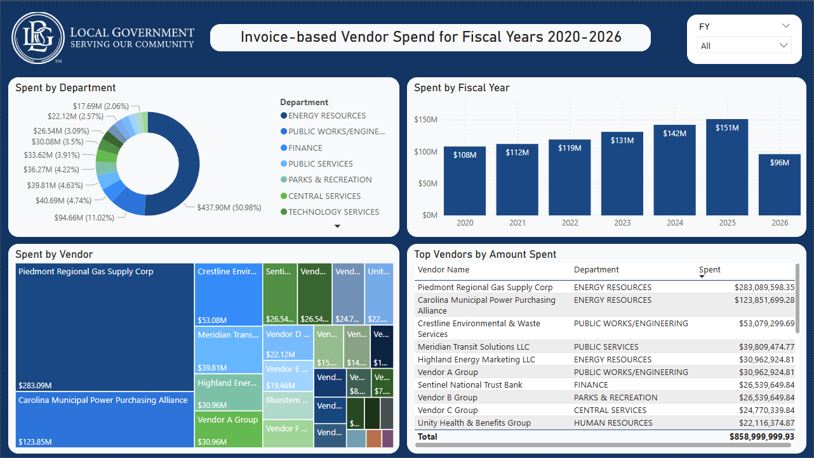
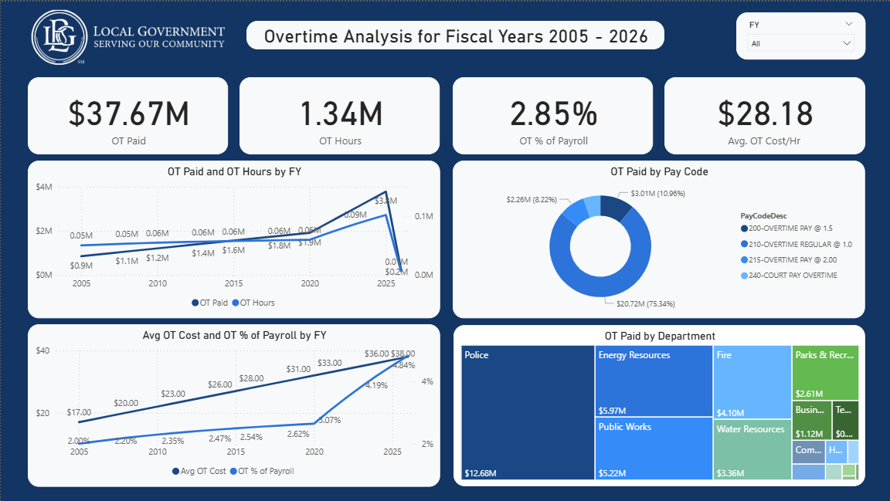
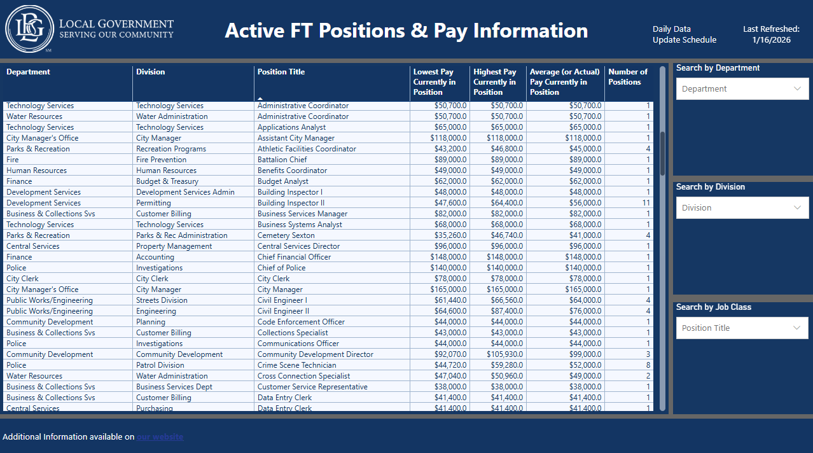
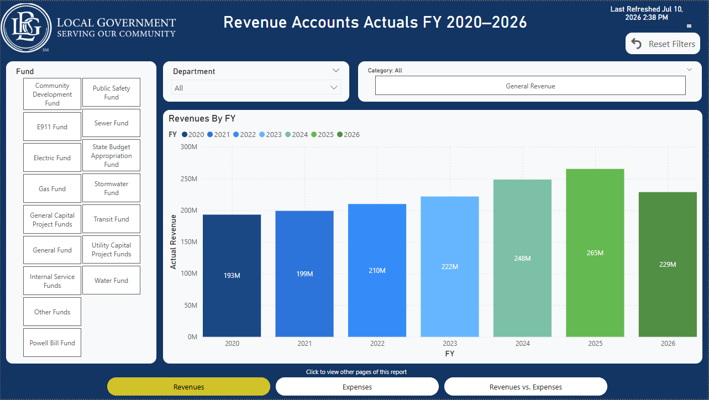
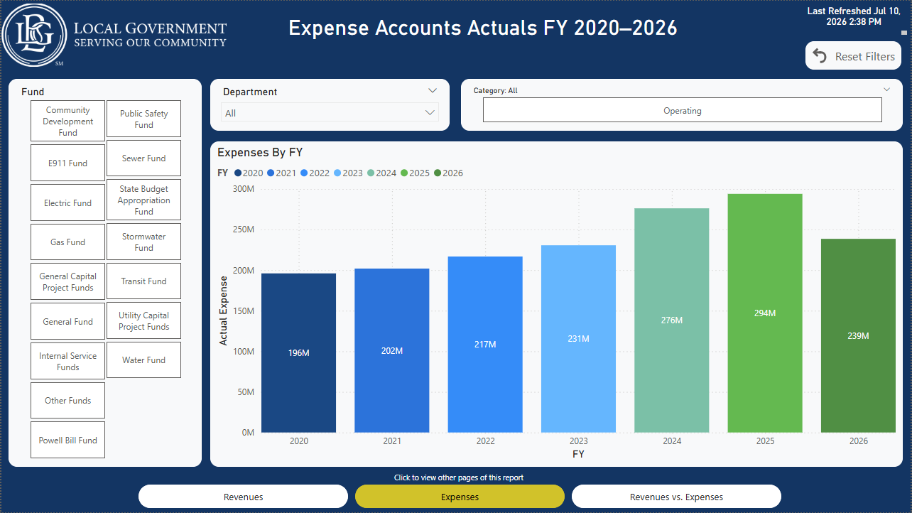
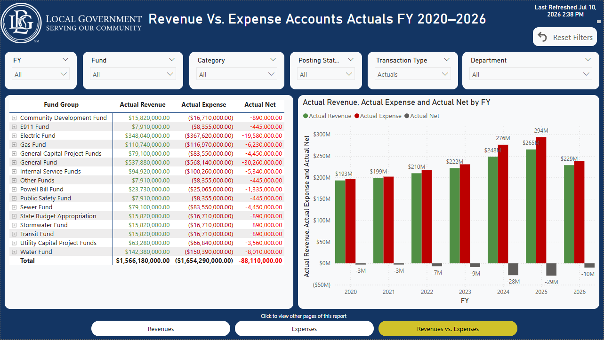
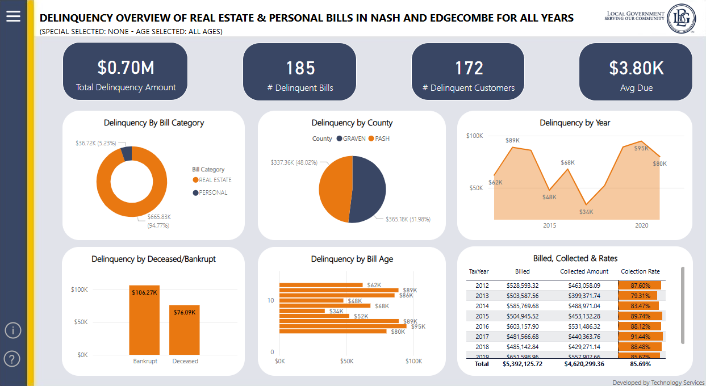
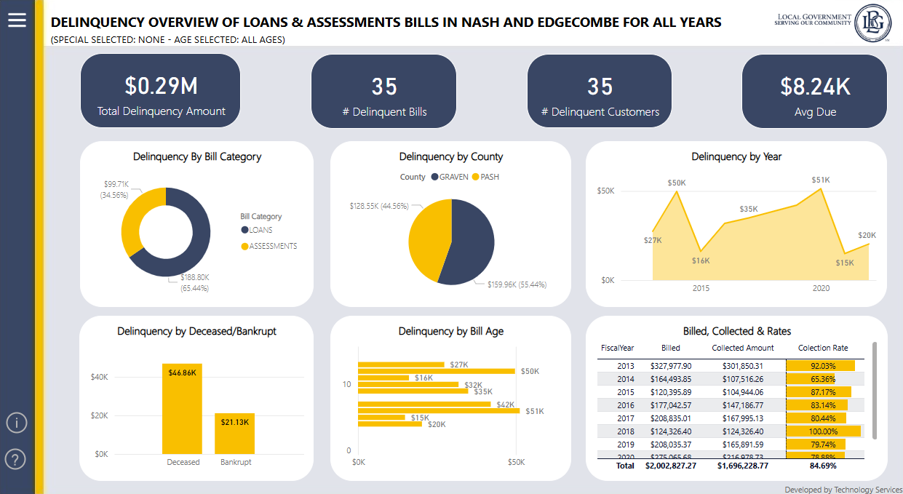
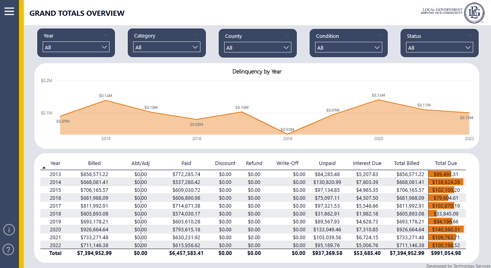

I build the systems that let organizations see their own data.
Systems analyst and applications developer at the City of Rocky Mount, NC. I administer
the City's Tyler MUNIS ERP and its surrounding systems, and build the reporting, internal
applications, and integrations around them — 20+ BI reports and applications currently in production, taken
end to end: requirements, development, integration, deployment, administration.
CRM Central: access governance for the City's core systems
City of Rocky Mount · sole developer · 2024 – present · feature-complete, pre-production
Problem. Access to the City's two Tyler ERPs — MUNIS and CIS Infinity — was requested
through DocuSign envelopes and free-text PDF forms. Nobody could see what access an employee
already had, requests were ambiguous because roles were typed rather than picked, audit records
were fragmented across envelopes, and nothing tracked the lifecycle end to end. There was no
deprovisioning trigger at all: the application's first automated account scan found seven former
employees still holding active ERP accounts.
Build. A Django 5 application giving directors live read-only visibility into their
employees' real MUNIS and CIS access, structured request wizards that pick from the actual role
catalogs, and a four-stage approval workflow (director → analyst → PM supervisor →
implementation). Requests are snapshotted at submission, so in-flight approvals are immune to
later admin changes — approvers always see exactly what was submitted. Zendesk tickets are
created automatically, and new-hire requests park until IT provisions the AD account, then
resume on their own. Every state change lands in an append-only audit log rendered as a
per-request timeline: the compliance artifact that replaces the DocuSign envelope.
Engineering decisions. Boring on purpose — no SPA, no Celery, no Redis. Asynchronous
work runs on database-as-queue patterns instead: a transactional email outbox (which removed
roughly 15 seconds of latency per submission that synchronous SMTP had been adding) and an
event-relay table drained by a single worker using compare-and-swap claiming with retries and
failure auditing. Row locks and idempotency guards closed real races a security audit
surfaced — double approvals creating duplicate tickets, events reprocessing. That audit also
drove fixes for an IDOR flaw, stored XSS coming in through ERP strings, and secrets hygiene.
Integrations have zero inbound HTTP surface: Power Automate writes to a database table rather
than calling a webhook. And because CIS runs on SQL Server 2014, which negotiates only TLS 1.0
and 1.1, the connection required FreeTDS with a documented OpenSSL security-level adjustment —
modern ODBC drivers simply refuse the handshake.
Structure. Four Django apps with clear ownership: core (users, departments,
audit, dashboards), directory (the service layer owning all external SQL),
requests (workflow engine, form builder, Zendesk client, notification outbox), and
org_chart (a D3.js drag-and-drop org-chart builder plus a structurally isolated HR
directory).
Status. All ten planned development phases are implemented, verified end to end, and
committed — core platform through CIS integration, the org-chart builder, automated new-hire
provisioning, and admin observability (worker health, system-health dashboard, per-request
timelines) — plus the security audit and four rounds of UX refinement. Feature-complete and
code-hardened; remaining work is deployment and operations — credential rotation, least-privilege
service accounts, production seeding — not development.
Writes go only to the app's own database; both systems of record are wired read-only.
15-second clip: request → approval → provisioning · dev environment, test data
Django 5 · HTMX · Alpine.js · Tailwind · SQL Server · Docker · Zendesk · Power Automate
02
Reverse-engineering 560 undocumented security roles — and proving the redesign lost nothing
City of Rocky Mount · sole analyst / developer · 2026 · analysis complete, migration pending
Problem. A supervisor review concluded that MUNIS's security roles had to be
overhauled before CRM Central could go live — governing access is meaningless if the underlying
roles are incoherent. The catalog had never been documented, and MUNIS offers no table or screen
that lists what a role actually grants. Nobody had tackled it because there was no dataset to
tackle it with.
Building the dataset. The system's only complete self-description is a 3,045-page PDF
report. Standard text extraction silently corrupted column alignment, so I parsed it on word
coordinates instead (pdfplumber clustering), producing a validated four-table dataset: 560 roles,
87,863 permission grants, 11,641 data-access settings, 6,511 user assignments — every page
attributed, zero unmatched lines. An independently written recount script — deliberately
checking the raw report rather than my pipeline's internals — caught a real parser bug where a
page-break header quirk was silently dropping about 37,000 permission rows. That check existed
because the analysis was worthless if the extraction was quietly wrong.
What the data showed. 27% of roles (153) granted access to nobody active. 121 roles
were held by exactly one person. 65% of all assignments belonged to disabled accounts. Roughly
300 roles turned out to be data-scope variants of a handful of templates, clustering into 43
near-duplicate families. Some roles were named after individual people — including one person's
private role created twice under different spellings, and a role named after one employee that
was actually held by someone else.
The redesign. I adopted Tyler's official RBAC taxonomy — separating functional, job,
data-scope, and workflow roles — with local deviations documented, and wrote it up as a
governance standard so the old patterns can't regrow: capability and data scope never mix in one
role, job bundles require at least three holders, no person-named roles, no account copying, and
every role needs a description a director can actually read. The candidate catalog of 442 roles
was derived from the data rather than a whiteboard, using cluster-core extraction with a
similarity threshold chosen empirically for least privilege — looser merging was tested and
rejected because it silently granted 500+ capabilities nobody held. All 560 legacy roles were
mapped to exactly one disposition: retire, merge, split, or human review, with full accounting.
The proof. I computed every enabled user's effective access before and after the
redesign: zero capability or scope loss across all 235 users — a re-runnable result,
independently re-verified by a 32-check sanity script written against the raw data. A separate
vocabulary audit of all 83 distinct permission-value strings caught partial-access values that
had been misclassified as denials (a masked-SSN inquiry view reads as restriction but is real
access), which would have silently dropped roughly 800 genuine grants — including
privacy-masked HR views — at build time. The redesign also surfaced a segregation-of-duties
exposure the legacy catalog had structurally hidden: users holding both entry and manage rights
across multiple financial modules.
Getting it approved. Business owners can't sign off on a spreadsheet of 560 rows, so I
built a self-contained static review app — no server, so sensitive data never leaves the internal
network — showing role-by-role and user-by-user before/after comparisons, department rollups,
consolidation scenarios with explicit over-grant "price tags," and in-app decision capture. It
doubles as the UX prototype for CRM Central's future role-governance pages.
Status. Analysis, design, coverage proof, and review tooling complete; briefing and
owner review packets prepared. Migration is deliberately gated on leadership sign-off — not yet
executed.
560 → 442
roles, with 153 proven safe to retire
0
access lost across 235 users — computed and re-verified
Business intelligence: dashboards and reporting across the City
City of Rocky Mount · report developer / analyst · 2022 – present · in production
Problem. Departments ran on data they couldn't see. Finance, Business & Collections,
HR, and management each needed a different view of the same systems, and getting it meant asking
someone to pull a report by hand.
Build. 20+ production Power BI dashboards and SSRS reports built directly against the
City's SQL Server sources, with SSIS pipelines feeding a reporting database — self-service views
that answer the recurring questions without a ticket.
Outcome. Departments that previously had no consolidated view of their own data now use
these tools for day-to-day decisions.









[David: one short caption per dashboard — what it shows and
who uses it. e.g. "Encumbrance and budget-vs-actual view used by Finance during monthly close."]
Power BI · DAX · SSRS · SSIS · SQL Server
04
Nexus: an on-premises AI knowledge base where data never leaves the network
City of Rocky Mount · co-built with a colleague · 2026 · core pipeline built and tested
Problem. Technology Services runs on tribal knowledge — fixes, procedures, vendor
records, and policy live in people's heads, scattered notes, and OneNote. When someone is out
or leaves, the knowledge leaves with them, and the same problems get re-solved from scratch.
SaaS knowledge tools were never an option: the content includes credentials, contracts, and PII
that can't be sent to a third-party cloud or LLM API.
Build. Staff fill in a short structured capture form — one of four article types
(Troubleshooting, SOP, Reference Record, Policy) — and a locally hosted model, Qwen3 14B on
Ollama, drafts a well-structured article from it. Nothing publishes automatically: a human
reviews and approves every draft in a three-column review interface before it goes live. Each
article type is defined by exactly three artifacts — a capture form, a prompt, and a render
template — so a new type is configuration, not a pipeline change.
Permission enforcement. RBAC with four roles and a division model on top; every
article carries public, division, or private visibility plus explicit per-user grants. The
entire application reads through one gateway function, get_allowed_articles(user) —
raw model access is banned by convention — so the same permission logic governs browsing,
search, and, later, RAG retrieval. Unauthorized access returns 404, not 403, so the app never
reveals that restricted content exists.
Guarding against the AI itself. Prompts are forbidden from inventing facts — where
input is missing, the model must emit an explicit placeholder rather than a plausible-sounding
guess — and a server-side gate blocks publishing until every placeholder is resolved. An
ai_edit_distance metric tracks how much humans rewrite each draft, which is the
signal for which prompts need tuning.
What's built vs. what's next. The full capture-to-publish pipeline works end to end
for all four article types, on top of a hand-built design system with light/dark theming and
roughly 200 tests. Real semantic search — chunking, embeddings, and hybrid pgvector + full-text
retrieval — and the permission-aware RAG chat assistant are the next phase, not yet built.
The adoption bar we set: two real users, daily, for two weeks, before department-wide rollout.
0
bytes of municipal data leave the network
4
article types, each config, not code
~200
tests across Python and JS suites
Screenshot: capture form or three-column AI review interface (redacted)
Outreach automation for a student information system with no API
NC Wesleyan University · sole developer · 2025 – present · in production
Problem. Advising staff logged every student contact into Jenzabar J1 by hand —
slow, error-prone, and impossible to prioritize across hundreds of students.
Build. A Selenium/Flask tool that records communications into J1 automatically
(browser automation where no API exists), plus scan logic with cooldown, flag, and
do-not-contact rules, and a dashboard staff use to decide who to reach next.
Outcome. Logging that consumed staff hours now happens automatically; outreach
priorities come from the dashboard instead of memory.
Screenshot or short clip: dashboard with synthetic student data
Python · Selenium · Flask · Jenzabar J1
06
Public-safety API integrations
City of Rocky Mount · integration lead · Nov 2024 – Feb 2025 · delivered
Led REST API integration work connecting the City's computer-aided dispatch
and records-management systems with third-party platforms — police body-worn cameras,
citizen-feedback surveys, and predictive patrol deployment. Mapped data models, coordinated
vendor requirements, validated the exchanges end to end.
REST APIs · CAD/RMS · vendor coordination
07
Tyler Time & Attendance (ExecuTime) upgrade — 1,200+ employees
City of Rocky Mount · upgrade lead, hands-on with one analyst · Dec 2024 – Apr 2025 · delivered
Payroll-critical upgrade of the City's time-and-attendance system, a separate
Tyler product that integrates with the MUNIS ERP. Requirements across Accounting, Payroll,
and HR; configuration; data integration with MUNIS; rollout documentation; adoption
monitoring after go-live.
System configuration · data integration · cross-department delivery
Engineering note
How CRM Central onboards an employee who doesn't exist yet
Django · Zendesk API · Power Automate · SQL Server
The problem. Sometimes an access request targets a brand-new employee who has no
account in any system — no ERP record, no CIS account, not even Active Directory or email.
The request can't proceed, but it also shouldn't be rejected: IT just needs to provision
the basics first. In the old email world, these requests stalled in someone's inbox.
The design. On submission, the application checks both source systems for the
employee. If neither has them, the request is parked in an awaiting-prerequisites
state and the app creates a Zendesk ticket through the API — addressed to helpdesk, with
custom fields for the AD username and email they'll provision. When helpdesk resolves the
ticket, Power Automate writes the result into an event table in the application's database.
A scheduled, idempotent job processes new events: it attaches the provisioned credentials
to the request, advances it into the normal approval workflow, and notifies the requestor
and first approvers. No message queue, no polling of external APIs — each system writes to
a seam the next one reads.
The prerequisite pipeline: each system writes to a seam the next one reads — no message queue.
The architecture rules underneath. The source systems are never written to: both
the ERP and CIS databases are wired read-only at the database-router level, so a bug can't
corrupt a system of record. All writes go to the application's own database, every state
change is audit-logged, external reads are cached, and workflows are snapshotted at
submission — so a request is judged by the rules that existed when it was filed, not the
rules of today.
Why it matters. The pattern — detect the gap, park the work, delegate to the
team that owns it, resume automatically on completion — turned the worst class of stalled
request into the smoothest one.
Personal projects & interests
Things I build and study outside work — some running, some on the back burner,
all pointing the same direction: systems, data, and how they model the real world.
Home lab
A Proxmox server I run at home for virtualization, self-hosted services, and testing
before anything reaches a production environment. Where most of the experimenting happens.
ProxmoxLinuxDocker
Mandarin learning app
[David: what stage is it at, what makes your approach different, and
what you've built so far?] Studying Mandarin myself is what started it.
PythonLearning tools
Graph databases
Exploring Neo4j and graph modeling — relationships between people, systems, and access
are naturally a graph, and I want to know that toolset properly.
[David: anything you've actually modeled yet?]
Neo4jCypher
Simulation & digital twins
Built a digital-twin simulation during an AI for Good residency weekend.
[David: what did the twin model, what was the team's goal, and what
did you personally build? Also: what draws you to simulation work?]
SimulationModelingAI for Good
What I run day to day
Beyond project work, I administer the City's Tyler MUNIS ERP and its integrating
products — Cashiering, Citizen Self-Service, Employee Self-Service, and Time & Attendance:
provisioning and access control, troubleshooting with and without vendor support, upgrade
and year-end close support.
I use AI tooling heavily as a development and analysis accelerator — the architecture,
validation standards, and decisions are mine; the tooling makes the execution faster.
Internal applications run containerized with Docker and are validated in a Proxmox dev/test environment before production.
A self-hosted LLM inference server (Ollama), co-built with a colleague, powers AI features
in internal apps while keeping municipal data on-premises.